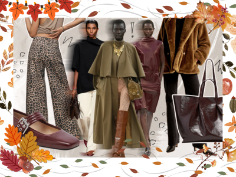

8 Fall's Standout Pieces
"You've got to find what you love. And that is as true for your work as it is for your lovers."

Leopard Print
Pieter Mulier reignited my love for leopard with Alaïa's fall collection. As a wink to the trend, I'll be working it in light touches—a patterned clutch, a silk scarf knotted around a bag handle, or a pony-hair flat to amp up a neutrals look.Dark Brown
The color brown immediately provides depth to any outfit, and a monochromatic palette allows you to play with different shapes and textures.The Leather Trench
I swear by leather trenches—they're so chic and make me feel like my most capable (and fashionable) self.The Classic Cashmere Crewneck
Wear them with skirts, jeans, trousers—whatever! It's an unbeatable combo in my eyes because it can be dressed up or down, but always looks put-together.Silk and Lace
As summer slips away, I'm excited to start prepping my wardrobe for a new season. I've fallen in love with a few lacey staples in all shapes and sizes that will make the transition seamless.Draped Tops
A little minimalist, a little classic. I love the modern elegance that a draped top provides for fall. Carven, Bottega Veneta, Del Core all showed tops in this vein, and it's all so chic and easily incorporated into a fall wardrobe with trousers, skirts, and jeans.Burgundy
Be it the leather skirts and fur coats at Khaite, the croc stamped clutches at Bottega Veneta, or the sheer layers at Ferragamo, I've been convinced to add a new color into my wardrobe this fall in burgundy.Corduroy
There's nothing that screams fall like corduroy and this season I'm trying to wear this cozy fabric as much as possible.
| Age | Preferred Shopping Method | |
|---|---|---|
| Online Shopping | Department Stores | |
| 18-24 | Most Likely | Least Likely |
| 25-34 | Moderate | Moderate |
| 35-54 | Moderate | Moderate |
| 55+ | Least Likely | Most Likely |
| Data based on consumer trends from Civicscience | ||
Y2K fashion, cargo pants, and platform shoes are just a few fashion trends today - how much do consumers like these trends? When asked to rate a variety of trends, adult respondents reported liking casual sneakers the most (e.g. Converse), with 64% favorable to them.
Denim on denim (e.g. jeans with a jean jacket) was another fan favorite, with 42% favorable to the look. Wide-leg jeans (e.g. boot cut, baggy), leather clothing, and Y2K fashion (1990s and early 2000s clothing) are favorable to a smaller audience, whereas belt bags and fanny packs are the least popular.
The Affordable Fashion Stores: Over 100 Pieces Under $100
- MANGO
- H&M
- ZARA
- COS
- UNIQLO
The Affordable Fashion Stores: Over 100 Pieces Under $300
- MANGO
- HELSA
- MADEWELL
- BANANA REPUBLIC
- COS